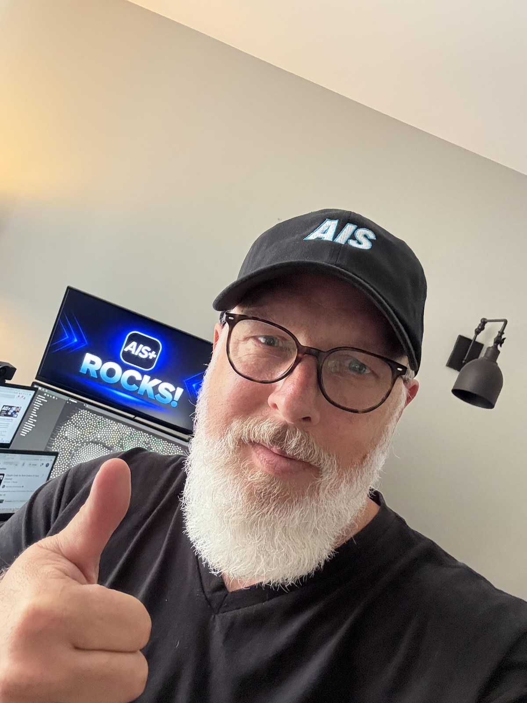
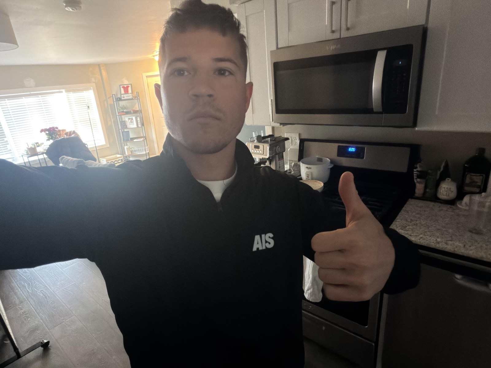
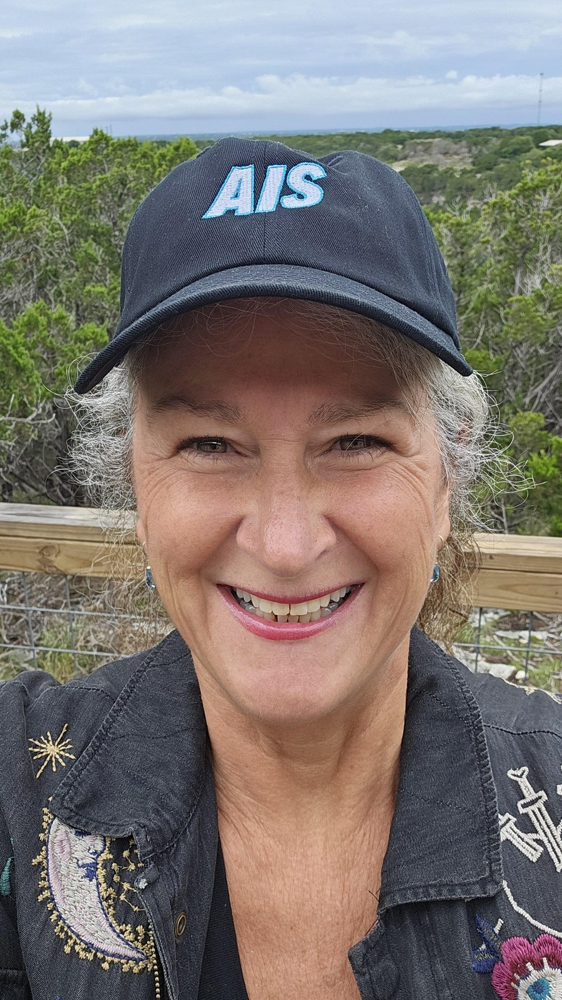
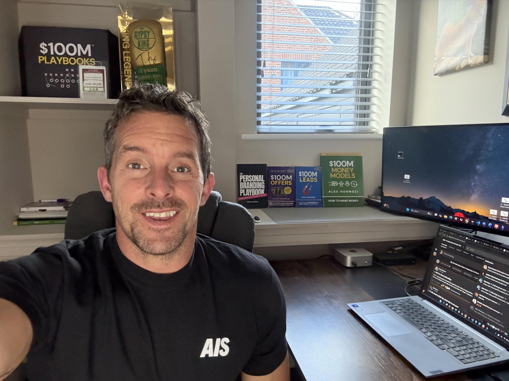
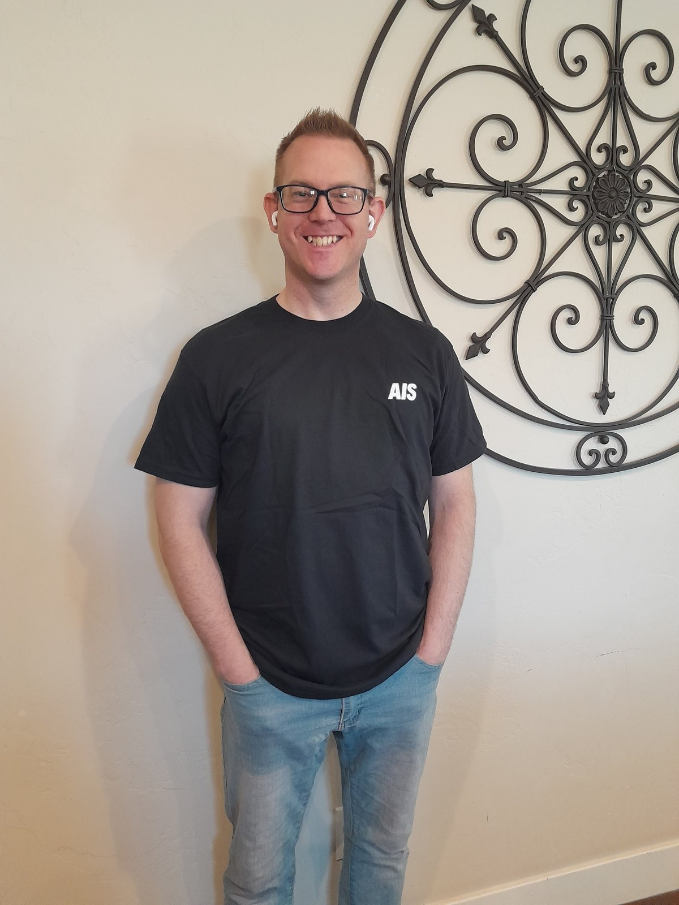
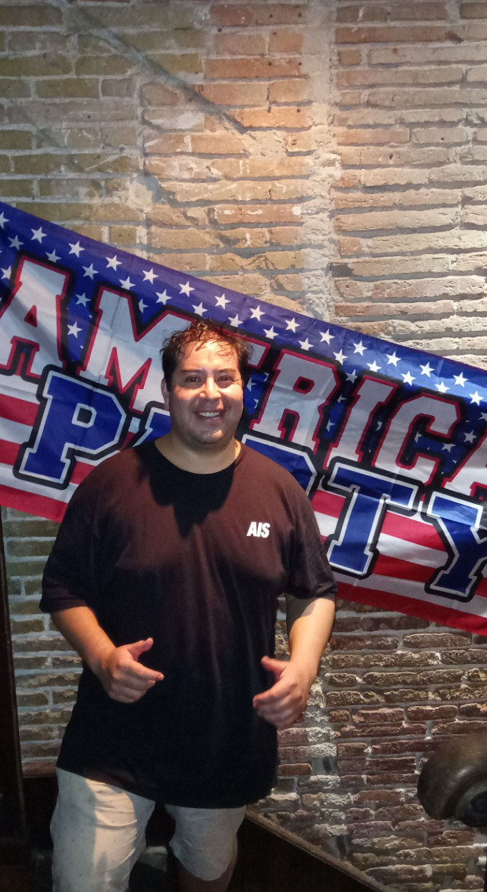

AIS
LIVE
AIS LIVE COMMUNITY
REPPING
THE
AIS
GEAR
Our members, wearing it proud

AIS COMMUNITY MEMBER
Michael Wacht

AIS COMMUNITY MEMBER
Kacper Rutkiewicz

AIS COMMUNITY MEMBER
Diane McCracken

AIS COMMUNITY MEMBER
Jody Murfit

AIS COMMUNITY MEMBER
Josh Holladay

AI CONSULTANT · AIS COMMUNITY
Mike
THANK YOU FOR REPPING
THIS IS
OUR
CREW
AI Automation Society